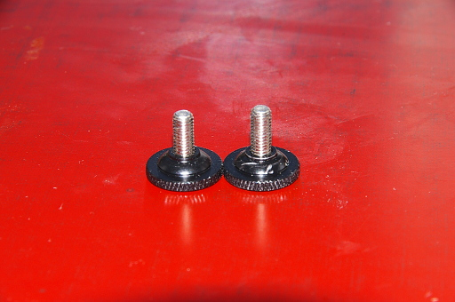

2018 年
08 月 29 日 ( 水 )
ピークデザインキャプチャの中国製コピー品のレビュー
今月始めの立山への旅行の前に Another Dimension というブランドのカメラキャプチャクリップを購入しました。ピークデザインのキャプチャの後発中国製コピー品です。下の写真のような形状をしています。
何に使うのかというと下の写真のようにザックのショルダーハーネス等にカメラを固定するのに使います。

こうすることでカメラを首から下げる必要がなくなり (写真では取り扱いミスなどによるカメラ落下防止のためにネックストラップをしていますが)、カメラを首から下げることで起こる諸問題、カメラが揺れて体にボンボン当たって不快、カメラが揺れて人にぶつけてしまう (子供が相手なら顔面に怪我をさせてしまう)、カメラが揺れて岩や物にぶつけてしまってカメラ本体やレンズを痛めてしまう、といったようなことから開放されます。
なによりカメラを常時首から下げていると疲れてしまいますが、このキャプチャークリップを使うと首の疲労からも開放されます。
またカメラはキャプチャーからワンタッチで外すことができるので、カメラをザックに入れていたりする場合などとくらべて格段に機動性が高くなり、シャッターチャンスを逃すことも少なくなります。
本家ピークデザインのキャプチャとは名称が異なるようですので、製品の各部名称をこれからの文章でも使うので説明しておきます。
- プレートロック
- クランクボルト
- クイックリリースプレート (以後プレートと略す)
- クリップ本体 (以後クリップと称す)
- クイックリリースボタン (以後リリースボタンと略す)
ざっくりと使い方を説明します。
カメラに取り付けるプレートはプレートロックを回して緩め、クイックリリースボタンを押すとスライドさせて外すことができます。
プレートロックは激しく動いたり転倒したときなどにカメラがクリップから外れないようにするためにプレートを締め上げてロックします。そうするといくらクイックリリースボタンを押してもプレートは外れなくなります。ですが個人的に思うのですが、転倒したときにカメラがクリップから外れず胸にくっついたままだとカメラだけでなく胸の肋骨も一緒に逝ってしまうのではないかと思うのですがどうなんでしょう？転倒したことがないのでわからないのですけど。
それはさておき外したプレートは下の写真のようなものです。
真ん中のネジをカメラの三脚ネジ穴に回しこんで入れて固定します。三脚のクイックシューのプレートと同じですね。
プレートを裏返すと下の写真のようになっています。
すでに立山で使い込んでいるので塗装が結構剥がれていますけど注視すべきはそこではなく、中心のネジです。見てわかるようにＤ型の金具で手で締めることができるようになっています。一見便利ですが手で締めると緩みやすいという欠点があります。
お勧めはマイナスドライバーで締めてしまうことです。
そうすると外すのが面倒ではないかという声が聞こえてきそうです。ですが実はこのプレート、実はアルカスイス互換のプレートなんですよ。なので三脚の雲台がアルカスイス互換だったりアルカスイス互換のクランプを雲台に取り付けていると、なんとプレートを外すことなく三脚に取り付けることができるんです。そんなこともあり自分は三脚をアルカスイス互換にしてしまうことを人には勧めています。もちろん他にもアルカスイス互換を人に勧める理由があるのですが、それはまた別製品のレビューでお話します。
それでプレートをカメラに取り付けた写真が下のものになります。
カメラが急に PENTAX から CANON に変わったのは気にしないでください。撮影の都合です。これでカメラとプレートの準備は完了です。
次にクリップを登山用のザックのショルダーハーネスに取り付けます。が……ここで問題が発生します。
以下に記述するボルトの短さの問題は解消されました現行バージョンでは長いボルトも添付されるようになっており、ピークデザインのボルトを別に購入する必要はなくなりました。
下の写真が本製品に添付されているクランクボルトです。
結論から言うとネジが短いのですね。amazon の本製品の説明写真にあるようにザックのショルダーハーネスにはとてもじゃないですけどネジ長が足りなくて取り付けられませんし、ズボンのベルトにすら取り付けられませんでした。このままで取り付けることができるところがありません。このことは amazon のレビューにも書きました (OrzBruford というレビューワーは私です)。この製品はダメなんじゃないかゴミなんじゃないかと思ったのですが、この製品がピークデザインのキャプチャのコピー品だということを思い出しました。
プレートはピークデザインと同じくアルカスイス互換品です。ひょっとしてクランクボルトもピークデザインと規格が同じなんじゃないかと、実際にネジのサイズを図ってピークデザインの規格と比べてみました。するとなんとなくいけそうです。なので賭けではあるのですがピークデザインのボルトパックを購入しました。
結果はまったく OK でした。ボルトのサイズ経もばっちり合いました。ちなみに Another Dimension のクランクボルトとは長さがこれだけ違います。
写真ではわずかな差に見えますが、実際には結構大きな差があります。おかげでクリップをザックのショルダーハーネスに取り付けることができました (このことも amazon のレビューに書きました)。
後はリリースボタンを押して、カメラに取り付けたプレートを差し込むだけです。
カメラをクリップから外すのはリリースボタンを押して引き抜くだけです。
それでこの製品 amazon のレビューにも書いたのですが、カメラをクリップに差し込むときに注意点があります。プレートロックがわずかでも締まると当然ですがプレートがクリップに差し込めなくなってしまいます。ですがこのプレートロックのツマミが非常に回りやすく締まってしまいやすいのですね。なのでそのことに気づかずプレートがクリップに入らねーと四苦八苦してしまうことがあります。私は立山で 2 日目までやってしまいました。
そういう場合はプレートロックが締まってないか確認してみてください。プレートロックが中途半端に締まっていると、プレートがクリップの半分くらいまでしか入りません。ご注意ください。
以上 Another Dimension のカメラキャプチャクリップのレビューでした。
- Category :
- レビュー
- カメラ
- 写真
- ピークデザイン
- キャプチャ
- アルカスイス